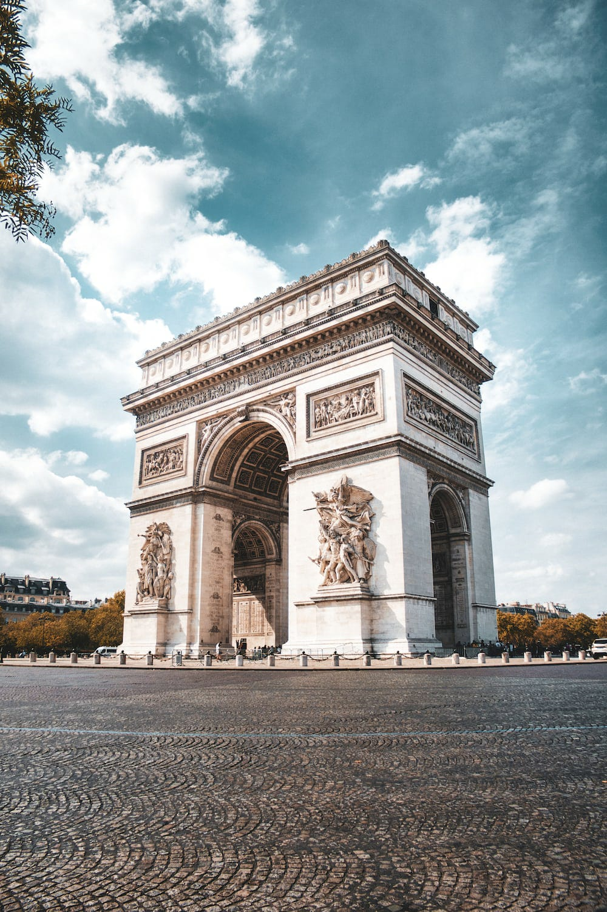
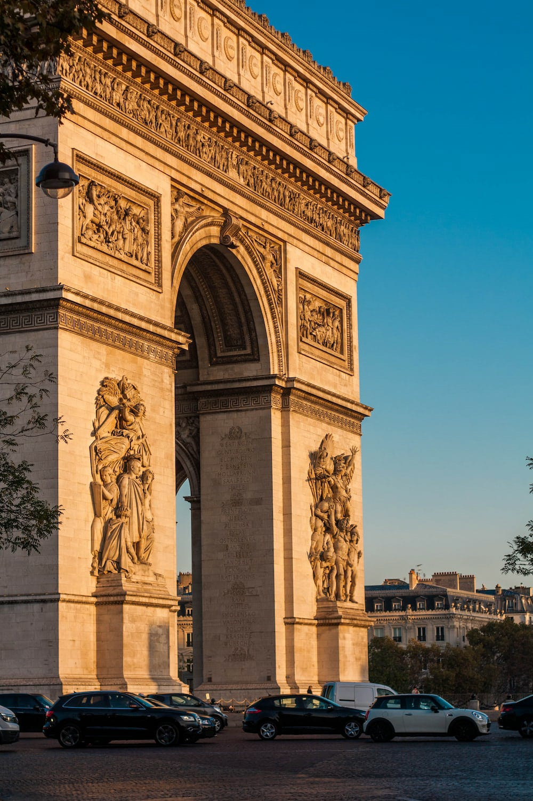
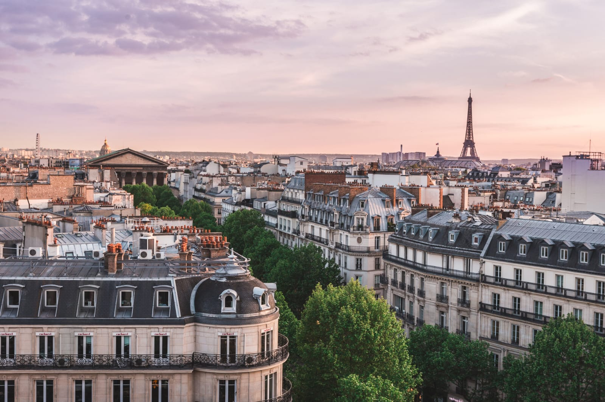
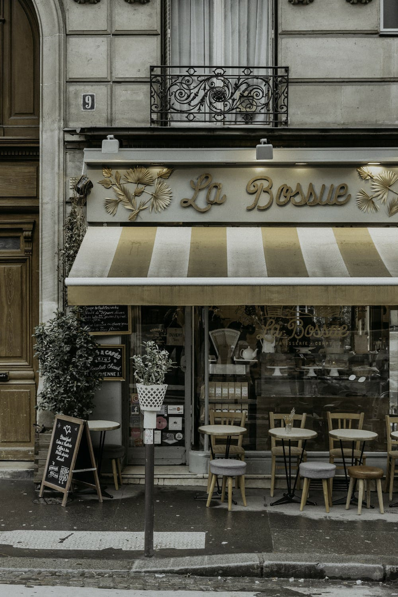

PARIS
   

 When to visit
When to visitThe best time to visit Paris is during the spring (April-June) or fall (September-October) when the weather is mild and there are fewer crowds. Summer (July-August) can be hot and crowded, especially at popular tourist attractions. Winter (November-March) can be cold and wet, but there are fewer crowds and lower prices.
Getting to Paris
Paris is a major international hub, so there are many airlines that offer direct flights from all over the world. The two main airports serving Paris are Charles de Gaulle Airport (CDG) and Orly Airport (ORY).
Getting around Paris
Paris has an excellent public transportation system, including the metro, buses, and RER trains. The metro is the fastest and most efficient way to get around the city, but it can be crowded and confusing during peak hours. Buses offer a more scenic way to get around, but they can be slower. RER trains connect the city center to the suburbs and airports.
Where to stay
Paris has a wide range of accommodations to choose from, from budget hostels to luxury hotels. The most popular areas for tourists to stay are the Latin Quarter, Montmartre, and the Marais. Things to do Paris is a city with something to offer everyone. Here are a few of the most popular tourist attractions: Eiffel Tower: The Eiffel Tower is one of the most iconic landmarks in the world. Visitors can take an elevator to the top for stunning views of the city. Louvre Museum: The Louvre is one of the largest and most famous museums in the world. It is home to a vast collection of art and artifacts, including the Mona Lisa. Notre Dame Cathedral: Notre Dame is a beautiful Gothic cathedral that is one of the most popular tourist attractions in Paris. Arc de Triomphe: The Arc de Triomphe is a triumphal arch that commemorates the victories of the French army. Visitors can climb to the top for panoramic views of the Champs-Élysées and the Eiffel Tower. Musée d'Orsay: The Musée d'Orsay is a museum that houses a collection of Impressionist and Post-Impressionist art. Palace of Versailles: The Palace of Versailles is a former royal residence that is now a museum. It is located just outside of Paris and is known for its lavish gardens and opulent interior. Other popular things to do in Paris include:
Taking a walk through the Jardin du Luxembourg or the Jardin des Tuileries Visiting the Musée Picasso or the Musée Rodin Seeing a show at the Moulin Rouge Taking a boat cruise on the Seine River Shopping on the Champs-Élysées or in the Marais Enjoying a coffee or a glass of wine at a sidewalk café Food and drink
Paris is a city with a world-renowned culinary scene. There are restaurants to suit every budget and taste. Some of the most popular dishes include:
Coq au vin: A dish of chicken braised in red wine with mushrooms and bacon. Bouillabaisse: A seafood stew from Marseille. Escargots: Snails cooked in butter and garlic. Crêpes: Thin pancakes that can be filled with a variety of sweet or savory ingredients. Macarons: Small, delicate cookies that are filled with a variety of ganaches or jams. Tips for traveling to Paris
Learn a few basic French phrases. This will show the locals that you are making an effort and will help you to communicate. Be prepared for crowds, especially at popular tourist attractions.
Purchase a Paris Pass to save money on admission to popular attractions. Take advantage of the public transportation system. It is the fastest and most efficient way to get around the city. Be aware of your surroundings and take precautions to avoid pickpockets. Relax and enjoy the city! Paris is a beautiful and vibrant city with something to offer everyone.
dowload image photo 1
photo 2
photo 3
photo 4
photo 5